개체명 중의성 해소
문자열을 검증 가능한 개체 ID와 지식 경로로 연결하기
0. 핵심 요약
NER이 찾은 언급에는 아직 의미가 확정되지 않았다. 후보를 지식 베이스에서 고르고 문맥으로 순위를 매긴 뒤, 선택한 CUI를 온톨로지에 연결해야 이름이 바뀌어도 같은 개념을 찾고 구조적 관계를 따라갈 수 있다. 그러나 공동 등장과 짧은 경로는 인과나 새 사실의 증명이 아니므로 검증 상태를 분리해야 한다.
| 단계 | 질문 | 실패 경계 |
|---|---|---|
| 인식·해소 | 이 문자열은 어느 CUI인가? | 후보 누락과 문맥 오판 |
| 통합 | 어떤 온톨로지 개체와 연결되는가? | 릴리스 드리프트와 잘못된 승격 |
| 활용 | 검색·경로·공동 등장이 무엇을 말하는가? | 연관을 인과나 사실로 과장 |
7.1 From recognition to disambiguation — 인식에서 중의성 해소로
- NER이 문자열 범위를 찾은 뒤, NED는 문맥을 이용해 그 언급을 지식 베이스의 고유 ID에 연결한다.
- 같은 문자열은 여러 개체를 가리킬 수 있고 서로 다른 문자열은 같은 개체를 가리킬 수 있다. 식별자와 별칭을 분리해야 두 경우를 함께 모델링할 수 있다.
작동 방식과 판단 경계
NER이 문자열 범위를 찾은 뒤, NED는 문맥을 이용해 그 언급을 지식 베이스의 고유 ID에 연결한다. 같은 문자열은 여러 개체를 가리킬 수 있고 서로 다른 문자열은 같은 개체를 가리킬 수 있다. 식별자와 별칭을 분리해야 두 경우를 함께 모델링할 수 있다.
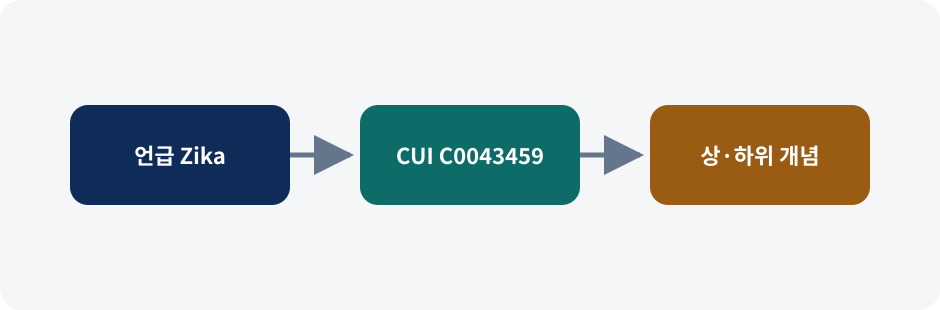
왼쪽에서 오른쪽으로 처리 단계와 연결 근거를 읽는다. 관계의 의미만 자체 도식으로 다시 구성했으며 수치 결과를 나타내지 않는다. 출처: Negro, Chapter 7, Figure 7.1.7.2 Understanding named entity disambiguation — 개체명 중의성 해소 이해하기
- NED는 후보 선택, 문맥 기반 순위화, 온톨로지 통합의 세 단계로 읽는다.
- 후보가 없으면 recall이 떨어지고, 순위가 틀리면 잘못된 CUI가 그래프 전체로 전파된다. 점수는 모델과 지식 베이스 버전에 종속된다.
작동 방식과 판단 경계
NED는 후보 선택, 문맥 기반 순위화, 온톨로지 통합의 세 단계로 읽는다. 후보가 없으면 recall이 떨어지고, 순위가 틀리면 잘못된 CUI가 그래프 전체로 전파된다. 점수는 모델과 지식 베이스 버전에 종속된다.
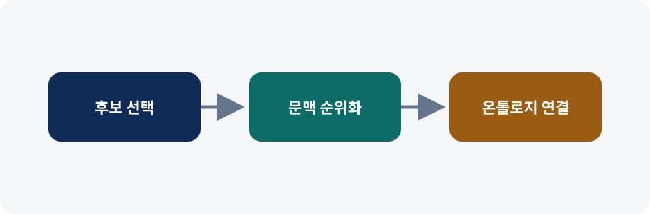
왼쪽에서 오른쪽으로 처리 단계와 연결 근거를 읽는다. 관계의 의미만 자체 도식으로 다시 구성했으며 수치 결과를 나타내지 않는다. 출처: Negro, Chapter 7, Figure 7.2.Listing 7.1 Selecting and ranking candidates with the scispaCy model
코드·질의의 핵심은 해당 단계의 입력과 출력 계약을 드러내는 것이다. 전체 코드는 비공개 교재 안내 링크에서 확인하고, 공개 리포트에서는 실행 의미와 실패 경계만 설명한다.
Listing 7.2 scispaCy model results for candidate selection and ranking
출력 예시의 핵심은 해당 단계의 입력과 출력 계약을 드러내는 것이다. 전체 코드는 비공개 교재 안내 링크에서 확인하고, 공개 리포트에서는 실행 의미와 실패 경계만 설명한다.
Listing 7.3 Sample entry from the UMLS entity file — UMLS 개체 파일 항목 예시
코드·질의의 핵심은 해당 단계의 입력과 출력 계약을 드러내는 것이다. 전체 코드는 비공개 교재 안내 링크에서 확인하고, 공개 리포트에서는 실행 의미와 실패 경계만 설명한다.
Listing 7.4 Samples from the SNOMED description file
코드·질의의 핵심은 해당 단계의 입력과 출력 계약을 드러내는 것이다. 전체 코드는 비공개 교재 안내 링크에서 확인하고, 공개 리포트에서는 실행 의미와 실패 경계만 설명한다.
Listing 7.5 Sample from the SNOMED edge file
코드·질의의 핵심은 해당 단계의 입력과 출력 계약을 드러내는 것이다. 전체 코드는 비공개 교재 안내 링크에서 확인하고, 공개 리포트에서는 실행 의미와 실패 경계만 설명한다.
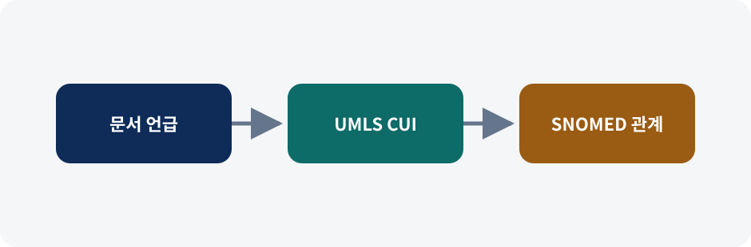
왼쪽에서 오른쪽으로 처리 단계와 연결 근거를 읽는다. 관계의 의미만 자체 도식으로 다시 구성했으며 수치 결과를 나타내지 않는다. 출처: Negro, Chapter 7, Figure 7.3.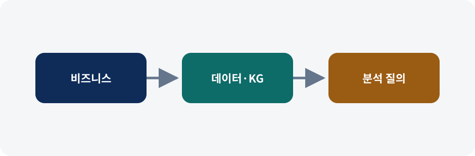
왼쪽에서 오른쪽으로 처리 단계와 연결 근거를 읽는다. 관계의 의미만 자체 도식으로 다시 구성했으며 수치 결과를 나타내지 않는다. 출처: Negro, Chapter 7, Figure 7.4.7.3 Domain-based NED and LLMs — 도메인 기반 NED와 LLM
- LLM은 후보와 설명을 제안할 수 있지만 의료 ID의 존재와 정확성을 보장하지 않는다.
- LLM 출력은 후보 상태로 보관하고 실제 UMLS 레코드와 온톨로지 경로를 조회해 검증한 뒤에만 사실 계층으로 승격한다.
작동 방식과 판단 경계
LLM은 후보와 설명을 제안할 수 있지만 의료 ID의 존재와 정확성을 보장하지 않는다. LLM 출력은 후보 상태로 보관하고 실제 UMLS 레코드와 온톨로지 경로를 조회해 검증한 뒤에만 사실 계층으로 승격한다.
7.4 Business and domain understanding — 비즈니스와 도메인 이해
- SoHO의 목표는 혈액·조직·세포·장기 관련 문서를 개념 단위로 연결해 안전과 추적성 판단을 돕는 것이다.
- 개념 검색, 구조 검색, 공동 등장 해석, 새 연결 후보 발견은 서로 다른 증거 수준을 가지므로 한 점수로 합치지 않는다.
작동 방식과 판단 경계
SoHO의 목표는 혈액·조직·세포·장기 관련 문서를 개념 단위로 연결해 안전과 추적성 판단을 돕는 것이다. 개념 검색, 구조 검색, 공동 등장 해석, 새 연결 후보 발견은 서로 다른 증거 수준을 가지므로 한 점수로 합치지 않는다.
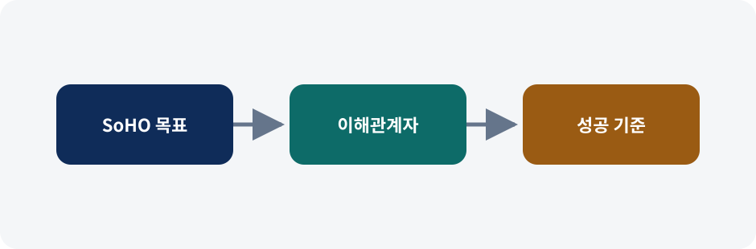
왼쪽에서 오른쪽으로 처리 단계와 연결 근거를 읽는다. 관계의 의미만 자체 도식으로 다시 구성했으며 수치 결과를 나타내지 않는다. 출처: Negro, Chapter 7, Figure 7.5.7.4.1 Context — 맥락
이 소절은 앞 단계의 출력을 다음 분석 단계가 사용할 수 있는 구조로 바꾸며, 입력 조건과 검증 지점을 함께 확인한다.
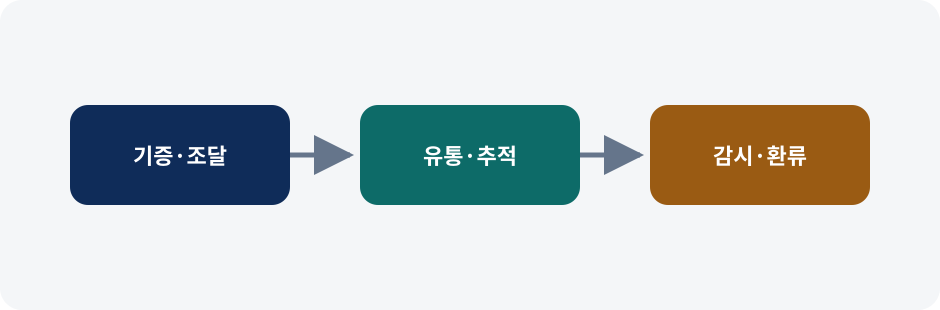
왼쪽에서 오른쪽으로 처리 단계와 연결 근거를 읽는다. 관계의 의미만 자체 도식으로 다시 구성했으며 수치 결과를 나타내지 않는다. 출처: Negro, Chapter 7, Figure 7.6.7.4.2 Use case definition — 활용 사례 정의
이 소절은 앞 단계의 출력을 다음 분석 단계가 사용할 수 있는 구조로 바꾸며, 입력 조건과 검증 지점을 함께 확인한다.
7.5 Understanding the data — 데이터 이해하기
- 규정·보고서의 비정형 텍스트와 UMLS·SNOMED·HPO의 정형 지식을 CUI를 중심으로 조화시킨다.
- 릴리스가 다른 온톨로지를 섞으면 코드와 관계가 드리프트한다. 파일 버전, 언어, 식별자 체계를 적재 메타데이터로 남겨야 한다.
작동 방식과 판단 경계
규정·보고서의 비정형 텍스트와 UMLS·SNOMED·HPO의 정형 지식을 CUI를 중심으로 조화시킨다. 릴리스가 다른 온톨로지를 섞으면 코드와 관계가 드리프트한다. 파일 버전, 언어, 식별자 체계를 적재 메타데이터로 남겨야 한다.
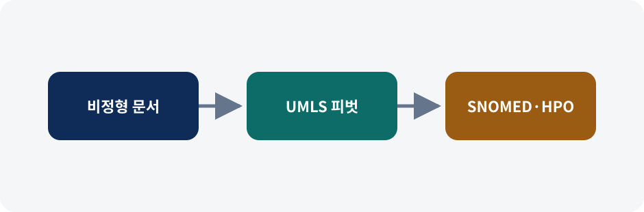
왼쪽에서 오른쪽으로 처리 단계와 연결 근거를 읽는다. 관계의 의미만 자체 도식으로 다시 구성했으며 수치 결과를 나타내지 않는다. 출처: Negro, Chapter 7, Figure 7.7.7.5.1 Unstructured data — 비정형 데이터
이 소절은 앞 단계의 출력을 다음 분석 단계가 사용할 수 있는 구조로 바꾸며, 입력 조건과 검증 지점을 함께 확인한다.
7.5.2 Domain ontologies — 도메인 온톨로지
이 소절은 앞 단계의 출력을 다음 분석 단계가 사용할 수 있는 구조로 바꾸며, 입력 조건과 검증 지점을 함께 확인한다.
Listing 7.6 Sample of the UMLS MRCONSO.RRF file — UMLS MRCONSO.RRF 파일 예시
코드·질의의 핵심은 해당 단계의 입력과 출력 계약을 드러내는 것이다. 전체 코드는 비공개 교재 안내 링크에서 확인하고, 공개 리포트에서는 실행 의미와 실패 경계만 설명한다.
Listing 7.7 Sample of the UMLS MRSTY.RRF file — UMLS MRSTY.RRF 파일 예시
코드·질의의 핵심은 해당 단계의 입력과 출력 계약을 드러내는 것이다. 전체 코드는 비공개 교재 안내 링크에서 확인하고, 공개 리포트에서는 실행 의미와 실패 경계만 설명한다.
Listing 7.8 Sample from the SNOMED description file — SNOMED 설명 파일 예시
코드·질의의 핵심은 해당 단계의 입력과 출력 계약을 드러내는 것이다. 전체 코드는 비공개 교재 안내 링크에서 확인하고, 공개 리포트에서는 실행 의미와 실패 경계만 설명한다.
Listing 7.9 Sample from the SNOMED relationship file
코드·질의의 핵심은 해당 단계의 입력과 출력 계약을 드러내는 것이다. 전체 코드는 비공개 교재 안내 링크에서 확인하고, 공개 리포트에서는 실행 의미와 실패 경계만 설명한다.
Listing 7.10 T1D details in hpo.owl — hpo.owl 안의 T1D 세부 정보
코드·질의의 핵심은 해당 단계의 입력과 출력 계약을 드러내는 것이다. 전체 코드는 비공개 교재 안내 링크에서 확인하고, 공개 리포트에서는 실행 의미와 실패 경계만 설명한다.
7.6 Building a SoHO knowledge graph — SoHO 지식 그래프 구축하기
- 문서와 페이지를 적재하고 NED 결과를 연결한 뒤 온톨로지 매핑과 문장 수준 공동 등장을 생성한다.
- 재실행 시 관계 수가 누적되지 않도록 멱등성을 보장하고, 후보·검증된 매핑·관찰된 공동 등장을 별도 관계로 유지한다.
작동 방식과 판단 경계
문서와 페이지를 적재하고 NED 결과를 연결한 뒤 온톨로지 매핑과 문장 수준 공동 등장을 생성한다. 재실행 시 관계 수가 누적되지 않도록 멱등성을 보장하고, 후보·검증된 매핑·관찰된 공동 등장을 별도 관계로 유지한다.
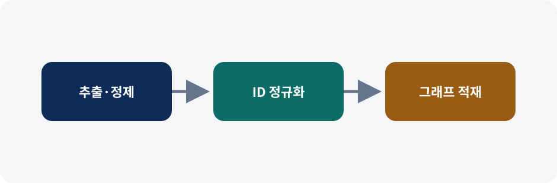
왼쪽에서 오른쪽으로 처리 단계와 연결 근거를 읽는다. 관계의 의미만 자체 도식으로 다시 구성했으며 수치 결과를 나타내지 않는다. 출처: Negro, Chapter 7, Figure 7.8.7.6.1 Defining the schema — 스키마 정의하기
이 소절은 앞 단계의 출력을 다음 분석 단계가 사용할 수 있는 구조로 바꾸며, 입력 조건과 검증 지점을 함께 확인한다.
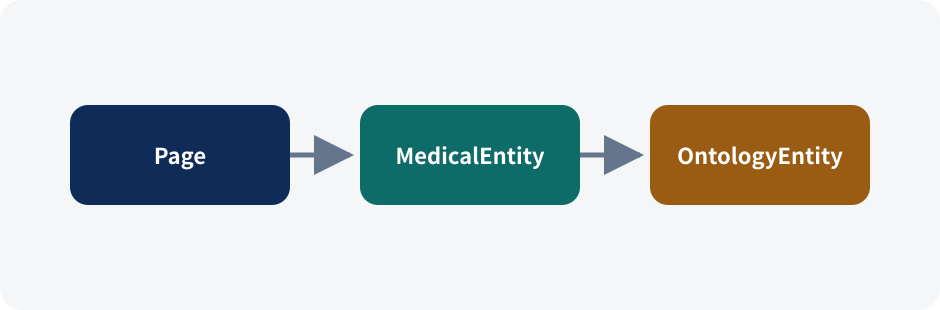
왼쪽에서 오른쪽으로 처리 단계와 연결 근거를 읽는다. 관계의 의미만 자체 도식으로 다시 구성했으며 수치 결과를 나타내지 않는다. 출처: Negro, Chapter 7, Figure 7.9.7.6.2 Processing and ingesting documents — 문서 처리와 적재
이 소절은 앞 단계의 출력을 다음 분석 단계가 사용할 수 있는 구조로 바꾸며, 입력 조건과 검증 지점을 함께 확인한다.
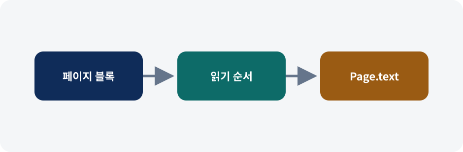
왼쪽에서 오른쪽으로 처리 단계와 연결 근거를 읽는다. 관계의 의미만 자체 도식으로 다시 구성했으며 수치 결과를 나타내지 않는다. 출처: Negro, Chapter 7, Figure 7.10.Listing 7.11 Loading textual content into Neo4j
코드·질의의 핵심은 해당 단계의 입력과 출력 계약을 드러내는 것이다. 전체 코드는 비공개 교재 안내 링크에서 확인하고, 공개 리포트에서는 실행 의미와 실패 경계만 설명한다.
7.6.3 Disambiguating and ingesting medical entities — 의학 개체 중의성 해소와 적재
이 소절은 앞 단계의 출력을 다음 분석 단계가 사용할 수 있는 구조로 바꾸며, 입력 조건과 검증 지점을 함께 확인한다.
Listing 7.12 Python dictionary resulting from document processing — 문서 처리 결과 파이썬 딕셔너리
출력 예시의 핵심은 해당 단계의 입력과 출력 계약을 드러내는 것이다. 전체 코드는 비공개 교재 안내 링크에서 확인하고, 공개 리포트에서는 실행 의미와 실패 경계만 설명한다.
Listing 7.13 Loading NED data
코드·질의의 핵심은 해당 단계의 입력과 출력 계약을 드러내는 것이다. 전체 코드는 비공개 교재 안내 링크에서 확인하고, 공개 리포트에서는 실행 의미와 실패 경계만 설명한다.
7.6.4 Processing, loading, and mapping ontologies — 온톨로지 처리·적재·매핑
이 소절은 앞 단계의 출력을 다음 분석 단계가 사용할 수 있는 구조로 바꾸며, 입력 조건과 검증 지점을 함께 확인한다.
Listing 7.14 Ingesting SNOMED: loading relationships — SNOMED 적재: 관계 적재
코드·질의의 핵심은 해당 단계의 입력과 출력 계약을 드러내는 것이다. 전체 코드는 비공개 교재 안내 링크에서 확인하고, 공개 리포트에서는 실행 의미와 실패 경계만 설명한다.
Listing 7.15 Ingesting SNOMED: loading names and aliases
코드·질의의 핵심은 해당 단계의 입력과 출력 계약을 드러내는 것이다. 전체 코드는 비공개 교재 안내 링크에서 확인하고, 공개 리포트에서는 실행 의미와 실패 경계만 설명한다.
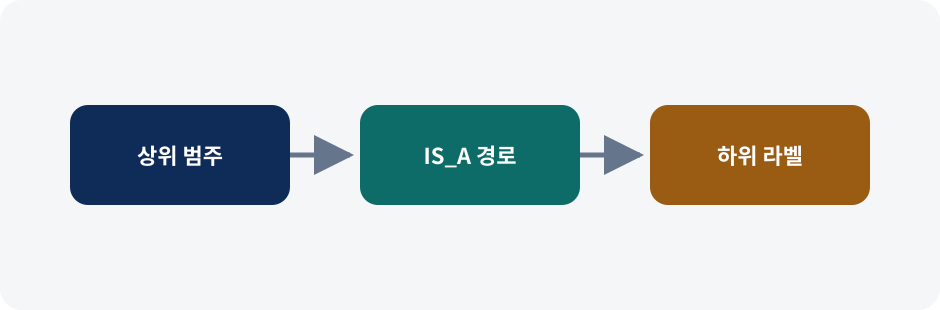
왼쪽에서 오른쪽으로 처리 단계와 연결 근거를 읽는다. 관계의 의미만 자체 도식으로 다시 구성했으며 수치 결과를 나타내지 않는다. 출처: Negro, Chapter 7, Figure 7.11.Listing 7.16 Ingesting SNOMED: propagating labels from first-level nodes
코드·질의의 핵심은 해당 단계의 입력과 출력 계약을 드러내는 것이다. 전체 코드는 비공개 교재 안내 링크에서 확인하고, 공개 리포트에서는 실행 의미와 실패 경계만 설명한다.
Listing 7.17 Ingesting HPO: loading the ontology
코드·질의의 핵심은 해당 단계의 입력과 출력 계약을 드러내는 것이다. 전체 코드는 비공개 교재 안내 링크에서 확인하고, 공개 리포트에서는 실행 의미와 실패 경계만 설명한다.
Listing 7.18 Ingesting HPO: adding the HpoEntity label to phenotypic features — HPO 적재: 표현형 특성에 HpoEntity 라벨 추가
코드·질의의 핵심은 해당 단계의 입력과 출력 계약을 드러내는 것이다. 전체 코드는 비공개 교재 안내 링크에서 확인하고, 공개 리포트에서는 실행 의미와 실패 경계만 설명한다.
Listing 7.19 Ingesting HPO: creating HpoDiseaseEntity nodes
코드·질의의 핵심은 해당 단계의 입력과 출력 계약을 드러내는 것이다. 전체 코드는 비공개 교재 안내 링크에서 확인하고, 공개 리포트에서는 실행 의미와 실패 경계만 설명한다.
Listing 7.20 Ingesting HPO: relations between HpoEntity and HpoDiseaseEntity — HPO 적재: HpoEntity와 HpoDiseaseEntity 사이의 관계
코드·질의의 핵심은 해당 단계의 입력과 출력 계약을 드러내는 것이다. 전체 코드는 비공개 교재 안내 링크에서 확인하고, 공개 리포트에서는 실행 의미와 실패 경계만 설명한다.
Listing 7.21 Integrating SNOMED through the UMLS — UMLS를 통해 SNOMED 통합하기
코드·질의의 핵심은 해당 단계의 입력과 출력 계약을 드러내는 것이다. 전체 코드는 비공개 교재 안내 링크에서 확인하고, 공개 리포트에서는 실행 의미와 실패 경계만 설명한다.
Listing 7.22 Connecting MedicalEntity and HpoDiseaseEntity nodes
코드·질의의 핵심은 해당 단계의 입력과 출력 계약을 드러내는 것이다. 전체 코드는 비공개 교재 안내 링크에서 확인하고, 공개 리포트에서는 실행 의미와 실패 경계만 설명한다.
7.6.5 Generating entity co-occurrences — 개체 공동 등장 생성하기
이 소절은 앞 단계의 출력을 다음 분석 단계가 사용할 수 있는 구조로 바꾸며, 입력 조건과 검증 지점을 함께 확인한다.
Listing 7.23 Creating co-occurrence relationships at the sentence level — 문장 수준의 공동 등장 관계 생성
코드·질의의 핵심은 해당 단계의 입력과 출력 계약을 드러내는 것이다. 전체 코드는 비공개 교재 안내 링크에서 확인하고, 공개 리포트에서는 실행 의미와 실패 경계만 설명한다.
7.7 KG-based use cases — KG 기반 활용 사례 (이어서)
- 개념 ID와 온톨로지 경로는 문자열 검색을 넘어 동의어 검색, 구조 확장, 해석과 발견을 가능하게 한다.
- 공동 등장과 짧은 경로는 인과 증거가 아니다. 허브 제거 뒤에도 원문 맥락과 도메인 전문가의 확인이 필요하다.
작동 방식과 판단 경계
개념 ID와 온톨로지 경로는 문자열 검색을 넘어 동의어 검색, 구조 확장, 해석과 발견을 가능하게 한다. 공동 등장과 짧은 경로는 인과 증거가 아니다. 허브 제거 뒤에도 원문 맥락과 도메인 전문가의 확인이 필요하다.
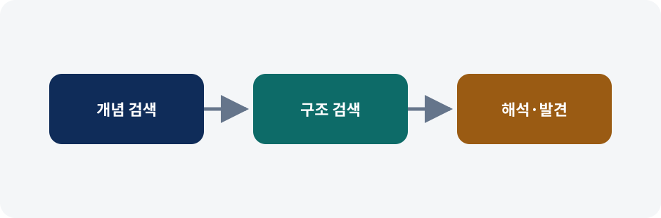
왼쪽에서 오른쪽으로 처리 단계와 연결 근거를 읽는다. 관계의 의미만 자체 도식으로 다시 구성했으며 수치 결과를 나타내지 않는다. 출처: Negro, Chapter 7, Figure 7.12.7.7.1 Conceptual search — 개념 검색
이 소절은 앞 단계의 출력을 다음 분석 단계가 사용할 수 있는 구조로 바꾸며, 입력 조건과 검증 지점을 함께 확인한다.
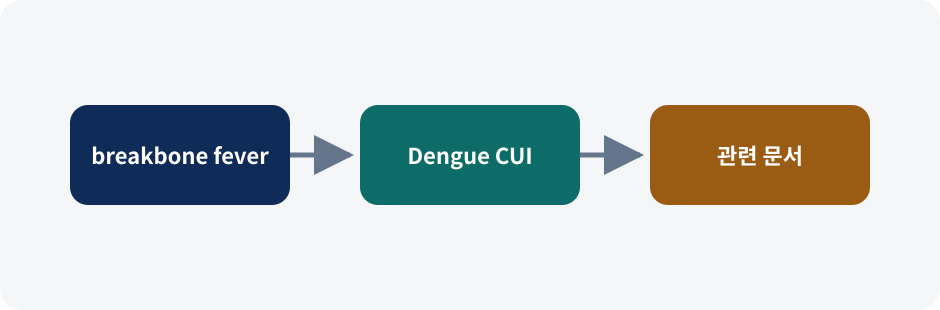
왼쪽에서 오른쪽으로 처리 단계와 연결 근거를 읽는다. 관계의 의미만 자체 도식으로 다시 구성했으며 수치 결과를 나타내지 않는다. 출처: Negro, Chapter 7, Figure 7.13.Listing 7.24 Full-text search query with "breakbone fever" as the input string
코드·질의의 핵심은 해당 단계의 입력과 출력 계약을 드러내는 것이다. 전체 코드는 비공개 교재 안내 링크에서 확인하고, 공개 리포트에서는 실행 의미와 실패 경계만 설명한다.
7.7.2 Structured knowledge-based search — 구조화된 지식 기반 검색
이 소절은 앞 단계의 출력을 다음 분석 단계가 사용할 수 있는 구조로 바꾸며, 입력 조건과 검증 지점을 함께 확인한다.
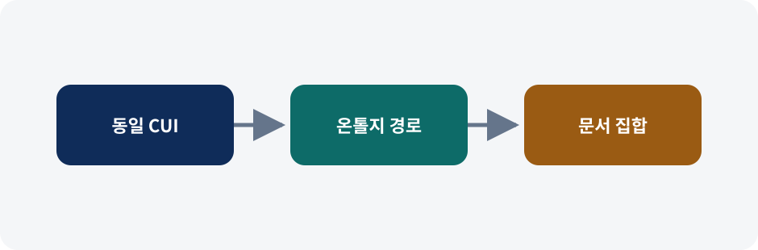
왼쪽에서 오른쪽으로 처리 단계와 연결 근거를 읽는다. 관계의 의미만 자체 도식으로 다시 구성했으며 수치 결과를 나타내지 않는다. 출처: Negro, Chapter 7, Figure 7.14.Listing 7.26 Getting text about diseases that can affect the islets of Langerhans — 랑게르한스섬에 영향을 줄 수 있는 질병에 관한 텍스트 얻기
코드·질의의 핵심은 해당 단계의 입력과 출력 계약을 드러내는 것이다. 전체 코드는 비공개 교재 안내 링크에서 확인하고, 공개 리포트에서는 실행 의미와 실패 경계만 설명한다.
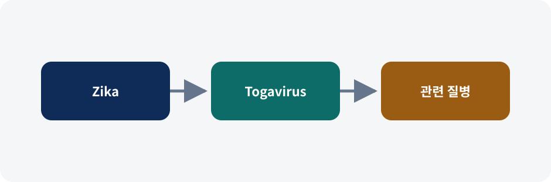
왼쪽에서 오른쪽으로 처리 단계와 연결 근거를 읽는다. 관계의 의미만 자체 도식으로 다시 구성했으며 수치 결과를 나타내지 않는다. 출처: Negro, Chapter 7, Figure 7.15.Listing 7.27 Getting documents mentioning diseases caused by Togaviruses — 토가바이러스가 유발하는 질병을 언급하는 문서 얻기
코드·질의의 핵심은 해당 단계의 입력과 출력 계약을 드러내는 것이다. 전체 코드는 비공개 교재 안내 링크에서 확인하고, 공개 리포트에서는 실행 의미와 실패 경계만 설명한다.
7.7.3 KG-based interpretability and discovery — KG 기반 해석 가능성과 발견
이 소절은 앞 단계의 출력을 다음 분석 단계가 사용할 수 있는 구조로 바꾸며, 입력 조건과 검증 지점을 함께 확인한다.
Listing 7.28 Sentences where AIDS and Hepatitis co-occur — AIDS와 간염이 공동 등장하는 문장
출력 예시의 핵심은 해당 단계의 입력과 출력 계약을 드러내는 것이다. 전체 코드는 비공개 교재 안내 링크에서 확인하고, 공개 리포트에서는 실행 의미와 실패 경계만 설명한다.
Listing 7.29 Paths connecting entities, interpretability perspective
출력 예시의 핵심은 해당 단계의 입력과 출력 계약을 드러내는 것이다. 전체 코드는 비공개 교재 안내 링크에서 확인하고, 공개 리포트에서는 실행 의미와 실패 경계만 설명한다.
Listing 7.30 Paths connecting entities, discovery perspective
출력 예시의 핵심은 해당 단계의 입력과 출력 계약을 드러내는 것이다. 전체 코드는 비공개 교재 안내 링크에서 확인하고, 공개 리포트에서는 실행 의미와 실패 경계만 설명한다.
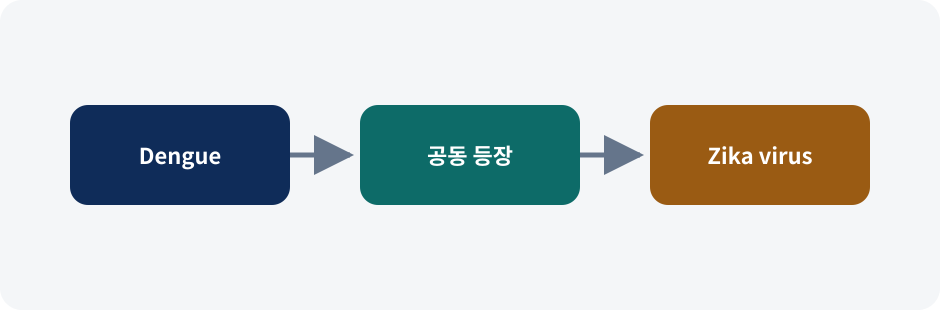
왼쪽에서 오른쪽으로 처리 단계와 연결 근거를 읽는다. 관계의 의미만 자체 도식으로 다시 구성했으며 수치 결과를 나타내지 않는다. 출처: Negro, Chapter 7, Figure 7.16.Listing 7.31 Retrieving the top entity types co-occurring with "Zika virus"
코드·질의의 핵심은 해당 단계의 입력과 출력 계약을 드러내는 것이다. 전체 코드는 비공개 교재 안내 링크에서 확인하고, 공개 리포트에서는 실행 의미와 실패 경계만 설명한다.
Listing 7.32 Getting co-occurring disease entities with context — 공동 등장하는 질병 개체와 맥락 얻기
코드·질의의 핵심은 해당 단계의 입력과 출력 계약을 드러내는 것이다. 전체 코드는 비공개 교재 안내 링크에서 확인하고, 공개 리포트에서는 실행 의미와 실패 경계만 설명한다.
Listing 7.33 Getting paths between Zika virus disease and Zika virus
코드·질의의 핵심은 해당 단계의 입력과 출력 계약을 드러내는 것이다. 전체 코드는 비공개 교재 안내 링크에서 확인하고, 공개 리포트에서는 실행 의미와 실패 경계만 설명한다.
Listing 7.34 Paths connecting Zika virus disease and Zika virus — 지카 바이러스 질환과 지카 바이러스를 잇는 경로
출력 예시의 핵심은 해당 단계의 입력과 출력 계약을 드러내는 것이다. 전체 코드는 비공개 교재 안내 링크에서 확인하고, 공개 리포트에서는 실행 의미와 실패 경계만 설명한다.
Listing 7.35 Paths connecting Dengue and Zika virus — 뎅기와 지카 바이러스를 잇는 경로
출력 예시의 핵심은 해당 단계의 입력과 출력 계약을 드러내는 것이다. 전체 코드는 비공개 교재 안내 링크에서 확인하고, 공개 리포트에서는 실행 의미와 실패 경계만 설명한다.
Listing 7.36 Finding HPO disease entities that co-occur with phenotypic features — 표현형 특성과 공동 등장하는 HPO 질병 개체 찾기
코드·질의의 핵심은 해당 단계의 입력과 출력 계약을 드러내는 것이다. 전체 코드는 비공개 교재 안내 링크에서 확인하고, 공개 리포트에서는 실행 의미와 실패 경계만 설명한다.
7.7.4 Uncovering new knowledge — 새로운 지식 발굴
이 소절은 앞 단계의 출력을 다음 분석 단계가 사용할 수 있는 구조로 바꾸며, 입력 조건과 검증 지점을 함께 확인한다.
Listing 7.37 Finding the top diseases co-occurring with "Zika virus" in text
코드·질의의 핵심은 해당 단계의 입력과 출력 계약을 드러내는 것이다. 전체 코드는 비공개 교재 안내 링크에서 확인하고, 공개 리포트에서는 실행 의미와 실패 경계만 설명한다.
Listing 7.38 Paths connecting Zika virus and Infectious neuronitis — 지카 바이러스와 감염성 신경염을 잇는 경로
출력 예시의 핵심은 해당 단계의 입력과 출력 계약을 드러내는 것이다. 전체 코드는 비공개 교재 안내 링크에서 확인하고, 공개 리포트에서는 실행 의미와 실패 경계만 설명한다.
Listing 7.39 Creating a projection on the SNOMED ontology
코드·질의의 핵심은 해당 단계의 입력과 출력 계약을 드러내는 것이다. 전체 코드는 비공개 교재 안내 링크에서 확인하고, 공개 리포트에서는 실행 의미와 실패 경계만 설명한다.
Listing 7.40 Filtering out hub nodes — 허브 노드 걸러 내기
코드·질의의 핵심은 해당 단계의 입력과 출력 계약을 드러내는 것이다. 전체 코드는 비공개 교재 안내 링크에서 확인하고, 공개 리포트에서는 실행 의미와 실패 경계만 설명한다.
Listing 7.41 Revised paths connecting Zika virus disease and Infectious neuronitis — 지카 바이러스 질환과 감염성 신경염을 잇는 수정된 경로
출력 예시의 핵심은 해당 단계의 입력과 출력 계약을 드러내는 것이다. 전체 코드는 비공개 교재 안내 링크에서 확인하고, 공개 리포트에서는 실행 의미와 실패 경계만 설명한다.
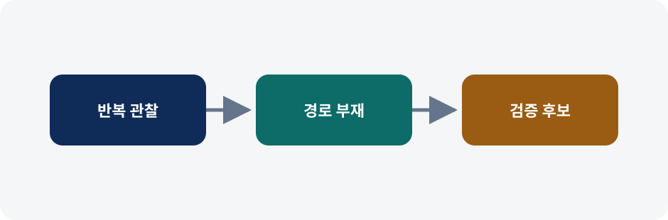
왼쪽에서 오른쪽으로 처리 단계와 연결 근거를 읽는다. 관계의 의미만 자체 도식으로 다시 구성했으며 수치 결과를 나타내지 않는다. 출처: Negro, Chapter 7, Figure 7.17.| 읽는 축 | 해석 | 경계 |
|---|---|---|
| 개체·문서·경로 | 질의 결과가 어떤 근거로 확장됐는지 확인한다. | 교재의 전체 데이터 출력은 재전재하지 않으며 fixture 수치와 직접 비교하지 않는다. |
| 읽는 축 | 해석 | 경계 |
|---|---|---|
| 개체·문서·경로 | 질의 결과가 어떤 근거로 확장됐는지 확인한다. | 교재의 전체 데이터 출력은 재전재하지 않으며 fixture 수치와 직접 비교하지 않는다. |
| 읽는 축 | 해석 | 경계 |
|---|---|---|
| 개체·문서·경로 | 질의 결과가 어떤 근거로 확장됐는지 확인한다. | 교재의 전체 데이터 출력은 재전재하지 않으며 fixture 수치와 직접 비교하지 않는다. |
| 읽는 축 | 해석 | 경계 |
|---|---|---|
| 개체·문서·경로 | 질의 결과가 어떤 근거로 확장됐는지 확인한다. | 교재의 전체 데이터 출력은 재전재하지 않으며 fixture 수치와 직접 비교하지 않는다. |
| 읽는 축 | 해석 | 경계 |
|---|---|---|
| 개체·문서·경로 | 질의 결과가 어떤 근거로 확장됐는지 확인한다. | 교재의 전체 데이터 출력은 재전재하지 않으며 fixture 수치와 직접 비교하지 않는다. |
| 읽는 축 | 해석 | 경계 |
|---|---|---|
| 개체·문서·경로 | 질의 결과가 어떤 근거로 확장됐는지 확인한다. | 교재의 전체 데이터 출력은 재전재하지 않으며 fixture 수치와 직접 비교하지 않는다. |
| 읽는 축 | 해석 | 경계 |
|---|---|---|
| 개체·문서·경로 | 질의 결과가 어떤 근거로 확장됐는지 확인한다. | 교재의 전체 데이터 출력은 재전재하지 않으며 fixture 수치와 직접 비교하지 않는다. |
| 읽는 축 | 해석 | 경계 |
|---|---|---|
| 개체·문서·경로 | 질의 결과가 어떤 근거로 확장됐는지 확인한다. | 교재의 전체 데이터 출력은 재전재하지 않으며 fixture 수치와 직접 비교하지 않는다. |
| 읽는 축 | 해석 | 경계 |
|---|---|---|
| 개체·문서·경로 | 질의 결과가 어떤 근거로 확장됐는지 확인한다. | 교재의 전체 데이터 출력은 재전재하지 않으며 fixture 수치와 직접 비교하지 않는다. |
컨테이너 재현 결과와 수정 권고
단일 Podman 컨테이너에서 Python 3.10, scispaCy 0.5.4, Neo4j Community 5.26, APOC와 n10s를 함께 실행했다. 10개 의료 개체와 4개 페이지로 구성한 결정적 fixture는 14개 노드와 15개 방향 관계를 만들며, 두 번 적재해도 수가 변하지 않았다.
| 항목 | 판정 | 수정 권고 |
|---|---|---|
| 후보 순위 | 부분 일치 | 모델·KB 버전과 점수 정의를 결과 가까이에 표시한다. |
| 개념 검색 | 의미 흐름 일치 | 문자열 점수와 CUI 언급 횟수를 구분한다. |
| 공동 등장 | 비교 불가 | 문장/페이지 단위와 표본 수를 명시한다. |
| 허브 제거 | 부분 일치 | 차수 임계값, 경로 방향과 최대 길이를 기록한다. |
fixture는 코드 경로와 해석을 검증하지만 전체 UMLS·SNOMED의 정확도·처리량을 대표하지 않는다. 관찰된 공동 등장은 검토 후보이지 임상 사실이 아니다.
핵심 용어
| NED | 문맥을 이용해 언급을 지식 베이스의 특정 개체에 연결하는 작업. |
|---|---|
| CUI | UMLS가 같은 의학 개념의 여러 이름에 부여하는 개념 고유 식별자. |
| 공동 등장 | 정한 문맥 단위에서 두 개체가 함께 관찰됐다는 관계. 인과를 뜻하지 않는다. |
| 허브 노드 | 연결이 매우 많아 무관한 개체 사이에도 짧은 경로를 만드는 일반 개념. |
참고 자료
- Alessandro Negro, Knowledge Graphs and LLMs in Action, Chapter 7.
- Chapter 7 한국어 해설판과 저자 공개 예제 코드.
- 이 회차의 실행 노트북 안내.